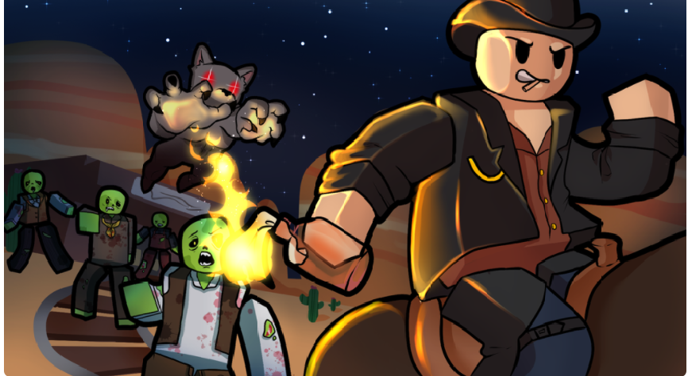

<html>
    <link rel="stylesheet" href="style.css">
    <title>Dead Rails — виживання на рейках</title>
  <style>
    body {
      font-family: 'Segoe UI', sans-serif;
      background-color: #101820;
      color: #f1f1f1;
      padding: 30px;
      line-height: 1.6;
    }
    h1 {
      color: #00bcd4;
    }
       .game-section {
      background-color: #1c1c1c;
      border-radius: 12px;
      padding: 20px;
      max-width: 900px;
      margin: auto;
      box-shadow: 0 5px 15px rgba(0,0,0,0.4);
    }
    <body>
         <header>
                 <div class="logo">
                
                </div>
      <div class="game-section">
    <h1>Dead Rails</h1>
    <p><strong>Dead Rails</strong> — гра про виживання у світі після катастрофи. Керуйте потягом, будуйте нові вагони, добувайте ресурси, відбивайтесь від ворогів — і відкривайте невідомі локації під час небезпечної подорожі залізницею.</p>

    <p>Ця гра поєднує елементи крафту, виживання, кооперативу й дослідження. Вона схожа на Minecraft за духом, але має унікальний стиль та сюжет.</p>
        <nav>
                <a href="trains.html">Потяги</a>
                <a href="Constructions.html">Структури</a>
          </nav>
          </header>
          <main>
                  <h1>dead rails [alpha] </h1> 
                  
              <p>Виживший це найкращий клас у грі - його способки-чим менше в нього здоров'я тим більше в нього урону!</p>

               
              <p> Доктор початоквсіх нубов -його способки - Може відроджувати без бондажей але жртвуе половиною свого здоровя.</p>
              
               
              <p>Майнер початок нубов -його способки-може добувати руду з більшою швидкістью.</p>

               
              <p>вампір добрий клас -його способки-його швидкість збільшена на 2.5% але він горить на сонці.</p>

               
              <p>зомбі оидн з найгірших класів -його способки-він востоновлюе свое здоров'я трупомі зомбі але він не може викоистовувати бандажи та олії.</p>

               
              <p>некромант най гірший клас у грі -його способки-він може возродити свого ворога із шансом 25% та ціною 10 свого здоров'я та зброею ближнього бою.</p>
              
               
              <p>залізна броня достатньо хороший клас -його способки-з'являеться з повним сетом броні але він на 10% сповільнений ніж простий игрок.</p>
          </main>
          <footer>
          </footer>
    </body>
</html>
